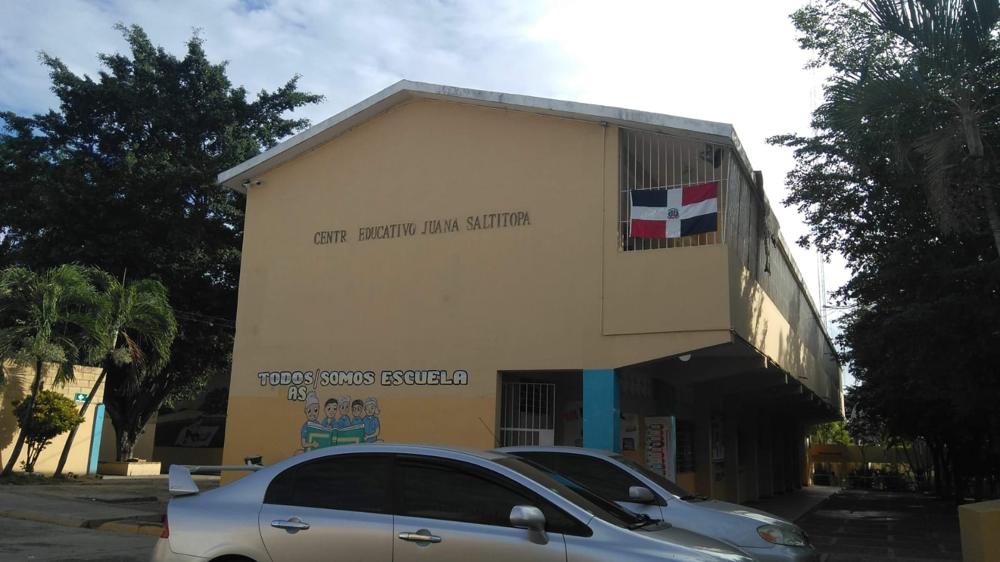

Liderazgo
Equipo Directivo
Directora
M.A. Kety Urbáez Pérez
Coordinadora
M.A. Carmen Abad
Orientadora 1er Ciclo
Aura Luisa Roque
Orientadora 2do Ciclo
Maribel Pilar


Más de 25 años formando estudiantes íntegros con valores, compromiso y excelencia educativa en la comunidad de Los Alcarrizos.
La Escuela Primaria Juana Saltitopa fue fundada como parte de los proyectos educativos impulsados durante el primer mandato del presidente Leonel Fernández y la gestión de la Lic. Ligia Amada Melo de Cardona.
Inició operaciones como una de las primeras 22 escuelas construidas en el país, originalmente bajo el nombre "Mi Nueva Esperanza". Posteriormente, al establecerse en su local propio, adoptó el nombre de la localidad, rindiendo homenaje a la figura histórica de Juana Saltitopa.
A pesar de sus inicios con precariedad y espacios inadecuados, la escuela ha crecido para convertirse en un pilar educativo en la comunidad de Los Alcarrizos.
Aportar una educación de calidad transmitiendo valores positivos, orientados hacia una cultura global adecuada para lograr las competencias esperadas del currículo, garantizando los derechos de todos los actores a una educación de calidad y formando sujetos libres, críticos y capaces de aportar su competencia a la sociedad.
Ser una institución confiable que proporcione una respuesta satisfactoria a las necesidades de nuestros alumnos, asumiendo como principio el respeto a la diversidad y fortaleciendo la identidad sociocultural.
Valor que obliga a las personas a no faltar; sinónimo de reverencia, atención y acatamiento hacia los demás.
Acuerdo mutuo y obligación compartida para alcanzar metas comunes en beneficio de nuestra comunidad.
La capacidad de actuar con integridad consigo mismo y con su entorno en cada acción que emprendemos.
"Rescatando los valores, construiremos una mejor sociedad."
— Filosofía de la Escuela Juana SaltitopaM.A. Kety Urbáez Pérez
M.A. Carmen Abad
Aura Luisa Roque
Maribel Pilar